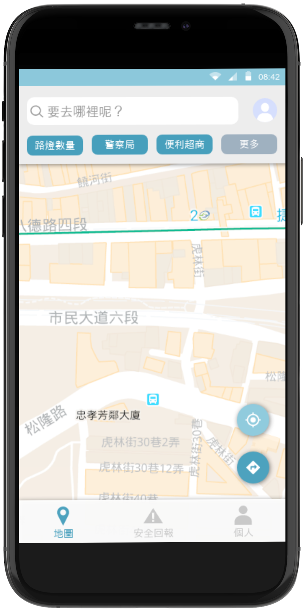
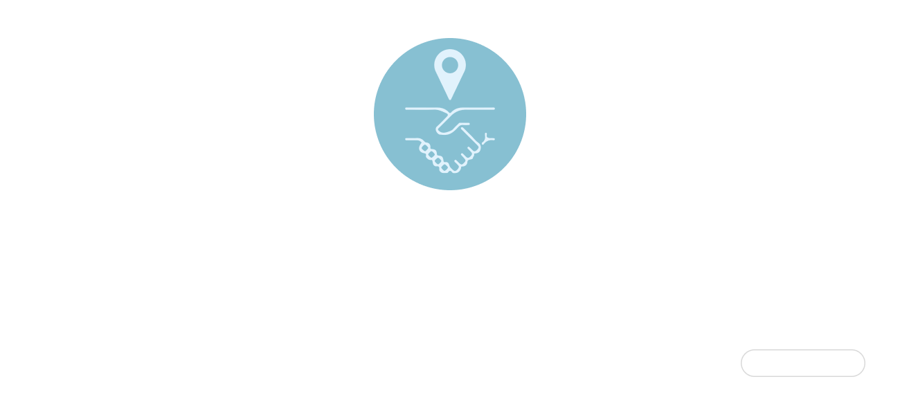

// Let us guide you toward a path of light and warmth
Friendly Maps
YEAR / VENUE
2021 - Young Designers' Exhibition 2020 - Mobile Application Innovation Contest
PROJECT CONTEXT
Academic Capstone Project 2-Person Team
MY ROLE
User Research / UX UI Design / Data Collection
Prototyping & Usability Testing Front-end Implementation
TECHNOLOGIES
React Native Google Maps API
Friendly Maps empowers users to reach their destinations safely and seamlessly, while fostering a
spirit of social mutual aid through a real-time reporting system.
Built upon the robust technological foundation of Google
Maps, Friendly Maps deeply integrates 13 key safety factors—including streetlight distribution, surveillance
camera
locations, and police patrol boxes. This allows users to customize their safety priorities and generate a
personalized "Friendly Route" that provides the highest level of security. Beyond static data application, the app
emphasizes the dynamic energy of social mutual aid. Through a real-time
reporting and reward mechanism, every user becomes an active guardian of community safety.
From personalized safe navigation and real-time safety notifications to community-driven safety reporting, this
project moves beyond simply reducing the anxiety of late-night travel. It explores how technology—through
collective data and shared experiences—can reshape urban navigation into a system that fosters a sense of care,
inclusivity, and security.
Feature Showcase
Project Demo
Design Concept
Making invisible perceptions of
safety
Visible
Integrating multiple safety signals—visibility, social presence, and institutional support—into a unified
model that reflects actual human perception.
Actionable
Embedding this model directly into navigation, allowing users to personalize and respond to safety conditions
in real time.
Shared
Transforming individual experiences into collective knowledge through real-time reporting, creating a
community-driven safety network.
Problem
Growing up, my mother often reminded me to take the brighter streets when walking home at night. Later, when I
started working part-time, I often returned home late when the streets were quiet and buses ran infrequently. In
those moments, the same advice would always come up: take the main roads, the brighter streets, the "safer"
places. But this made me wonder:
What actually defines a safe place?
Does the number of streetlights really determine whether a place is safe?
While tools like Google Maps provide efficient navigation, they rarely help users understand whether a route is
safe. This uncertainty is not limited to daily commuting. When traveling in unfamiliar cities, people often only
realize that an area feels unsafe after they have already arrived there.
These questions led me to explore how people perceive safety in urban environments and how navigation tools could
better support situations such as walking home late at night or navigating unfamiliar places.
Research
Overview
To understand how people define urban safety and what a safety-oriented navigation tool should offer, I
conducted user interviews, an online survey, and a competitive analysis of existing map services.
User Interviews
To understand users' needs regarding safety-oriented navigation, we conducted interviews with participants of
different ages and backgrounds.
The interviews revealed several patterns in how people perceive safety when navigating the city.
Safety is contextual
Users felt more vulnerable when walking at night or entering unfamiliar areas, suggesting that safety
perception changes with time and context.
Safety is evaluated through multiple signals
Participants described safety as a combination of visibility, nearby facilities, social presence, and
risk-related cues rather than a single indicator.
Users want safety to be legible
Participants wanted to know why a place is considered safe or unsafe, rather than simply being told where to
go.
Survey Highlights
We collected 159 survey responses. The largest group was women aged 21–25, and most participants primarily
commuted by MRT, bus, or walking. 80% reported feeling unsafe during late-night travel or in unfamiliar areas.
► Insight 1 - Safety is multi-dimensional
Safety Factors Identified by Users
Which of the following factors do you consider essential for urban safety?
(Multiple Choice)
Streetlights
118 votes (74.2%)
Environmental Conditions
115 votes (72.3%)
Police Stations
114 votes (71.7%)
Crime Rate
114 votes (71.7%)
Mobile Signal
105 votes (66.0%)
CCTV
104 votes (65.4%)
24H Convenience Stores
95 votes (59.7%)
Road Conditions
82 votes (51.6%)
MRT / Subway Stations
71 votes (44.7%)
24H Fast Food Stores
31 votes (19.5%)
Police Patrol Boxes
30 votes (18.9%)
Pharmacies / Clinics
28 votes (17.6%)
Gas Stations
20 votes (12.6%)
How Users Prioritize Safety Dimensions
Which single factor do you consider the most important for personal safety?
Environmental Visibility29.4%
Environmental Risk25.5%
Institutional Safety23.5%
Social Presence21.8%
Grouped from 13 original safety factors into 4 broader safety dimensions
Survey results showed that people rely on multiple safety signals rather than a single factor.
To better understand prioritization, these 13 factors were grouped into four broader dimensions:
environmental visibility, environmental risk, institutional safety, and social presence.
The distribution across these dimensions was relatively balanced, suggesting that no single definition
of
safety dominates.
This indicates that safety recommendations should be flexible and personalized.
► Insight 2 - Safety information is fragmented
Most participants rely on news media
(46.2%), personal experience (26.9%), and word-of-mouth (25.6%) to
understand safety conditions. This suggests that safety information is often indirect, local, and
difficult
to access in unfamiliar environments.
► Insight 3 - Users want actionable support
The most expected features were safe route filtering, real-time alerts, user-generated safety reports, and
live location sharing. These responses suggest that users want tools that support real-time decision-making
rather than simply displaying information.
Most Expected Features
What functions should a human-friendly map have?
Safe route filtering and navigation
Real-time safety notifications
User-generated safety reports
Route / live location sharing
Because many of these features depend on user contributions, trust, privacy, and participation incentives also
became important design considerations.
Competitive Analysis
To understand how safety information is currently represented in map services, we analyzed two types of
platforms: widely used navigation tools such as Google Maps, and safety-oriented map projects such as Taiwan
Midnight Map and Taiwan Risky Road.
Feature
Google Maps
Taiwan Risky Road
Taiwan Midnight Map
Police Taipei
Friendly Map
Route navigation
✓
✗
✗
✗
✓
Safety / risk map
△
△
✓
✓
✓
Data filtering
✓
✗
✗
✓
✓
Community reporting
✓
✗
✗
✓
✓
Safety alerts
△
✗
✗
✗
✓
Navigation apps optimize efficiency, but provide limited safety context.
Safety-oriented platforms visualize risk, but rarely support full route planning.
Users piece together safety information across multiple services.
Key Insights
01 Safety is multi-dimensional
Users evaluate safety through a combination of environmental visibility, surrounding
activity, institutional presence, and environmental risk rather than a single factor.
02 Safety is subjective
Different users prioritize different safety factors, meaning that what feels safe to one person may not feel
safe to another.
03 Safety is context-dependent
Perception of safety changes depending on context, particularly in unfamiliar environments or during
nighttime.
04 Safety information is fragmented
People rely on scattered sources such as news, personal experience, and word-of-mouth, making safety
information difficult to access and evaluate.
05 Safety is not integrated into
navigation
Users must interpret risks on their own and switch between multiple tools, as safety is not embedded into
existing navigation experiences.
Strategy
Design Implications
Based on insights from user interviews, competitive analysis, and surveys, we identified five key design
implications that guide the development of the Friendly Map.
#1
Safety cannot be reduced to a single factor
Users rely on multiple environmental and social cues
➜ Integrate Multiple Safety Indicators
Combine multiple safety indicators into a unified model for holistic safety understanding.
#2
No single route is universally safe
Safety varies across individuals and situations.
➜ Customizable Safety Preferences
Allow users to adjust safety preferences.
#3
Safety is contextual and time-sensitive
Perception shifts in unfamiliar or late-night contexts.
➜ Provide Real-time, Context-aware Safety Support
Deliver real-time, context-aware safety support that adapts to changing environments.
#4
Safety information is fragmented and localized
Information is limited to familiar contexts and personal experience.
➜ Aggregating Safety information
Aggregate and structure safety information into a unified, location-aware system.
#5
Safety is not embedded into navigation experiences
Users must interpret risks and switch between separate tools.
➜ Integrating Safety into Navigation
Embed safety factors directly into route planning to enable actionable navigation.
Solution
Key Features
Customizable Map Layers
Allow users to filter and visualize safety and environmental information based on their needs.
Users can select which elements to display on the map, including 13 safety indicators and practical
information such as public restrooms and trash bins.
Expands safety from risk awareness to everyday usability.
Personalized Safe Route Navigation
Routes adapt to each user's definition of safety.
Users can prioritize different safety factors, allowing the system to generate routes that reflect
personal preferences instead of a fixed standard.
This enables context-aware and personalized navigation, balancing efficiency with safety and embedding
multi-dimensional safety directly into the routing process.
Community Safety Reporting
Enable users to share and access real-time safety information.
Users can add reports to specific locations, describing safety conditions or incidents, and view reports
shared by others.
This transforms individual experiences into collective knowledge, making localized safety information
visible
and accessible.
Live Location Sharing
Support real-time safety through shared location tracking.
Users can share their live location during navigation, allowing selected contacts to monitor their
journey
in
real time and respond if necessary.
Enhances perceived safety by extending situational awareness beyond the individual, especially in
unfamiliar
or high-risk contexts.
Personalized Settings & Preferences
Adapt the system to individual habits and usage contexts.
Users can customize settings such as frequently used routes, notification preferences, and offline map
access.
These configurations allow the system to better align with users' daily behaviors and situational needs.
Key Screens

Map
Safety-focused navigation interface.
Safety Reporting
Real-time community-based safety sharing.
Profile
Personal settings and safety preferences.
System
Site Map

Visual Design
Primary Colors -
Teal-based palette combining blue (trust) and green (safety).
Used for navigation and key interactive elements.
Secondary Colors -
Used for alerts, states, and inactive elements to enhance status clarity.
A clean white background reduces visual noise and improves readability.
#439DBB
#8BC8DB
#FA7470
#C6C6C6
#EDEDED
// Reflection
"Technology is not neutral — it reflects whose experiences are considered and whose are overlooked."
Through this project, I realized that design begins with listening. What seemed like a simple navigation problem
was, in fact, about fear, trust, and lived experience. Friendly Maps taught me that meaningful technology does
not only optimize efficiency—it acknowledges vulnerability. By translating personal concern into a data-driven
system, I learned how design can bridge individual emotion and collective infrastructure. This insight continues
to shape my approach to human-centered technology.